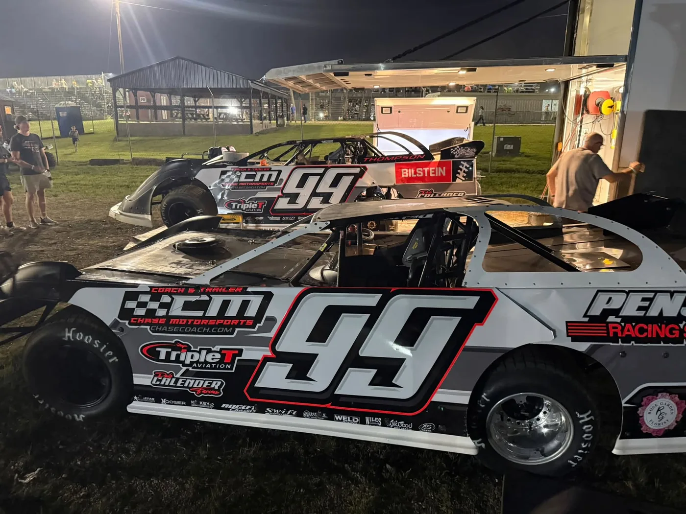
Silver & black
The super late model, 2026.
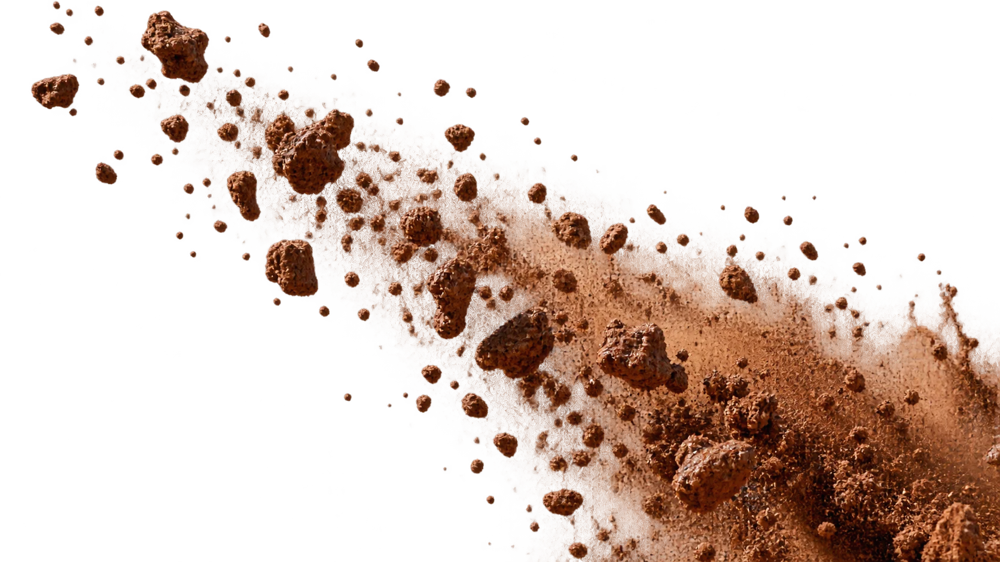
Hammer down.

Dirt late model driver. Paducah, Kentucky.
Scroll down
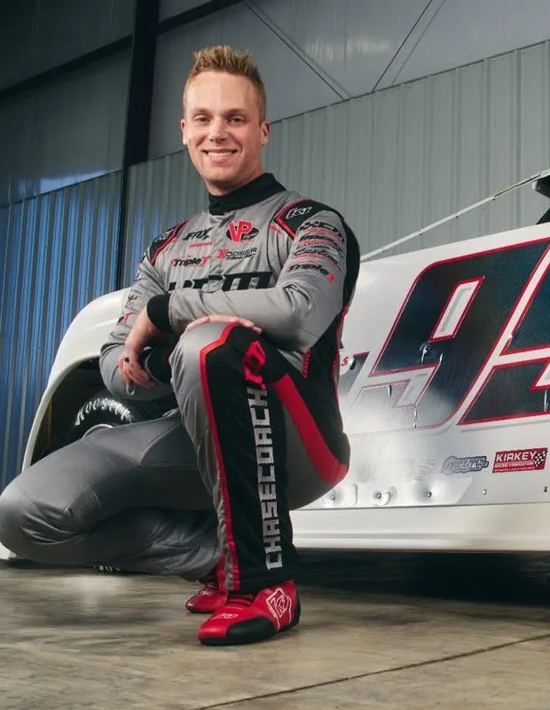
“I love a fast hooked-up racetrack.”
9 July 2023 · Tri-State Speedway · Haubstadt, Indiana
DIRTcar Summer Nationals, round 20. Forty laps, $5,000 to win.
He starts eighth. Shannon Babb, the winningest driver the series has ever had, is out front.
Lap 1 of 40
Babb got held up in lapped traffic between turns three and four. Thompson went by, took the checkered flag, and danced on the roof in victory lane. His first Summer Nationals win.
The check went up in the trophy room. Then it was back to the home track, where he runs double duty and still sets quick time.
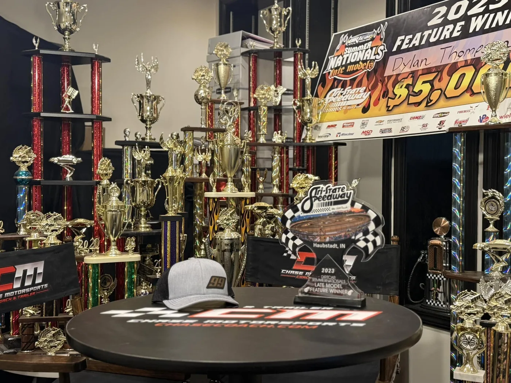
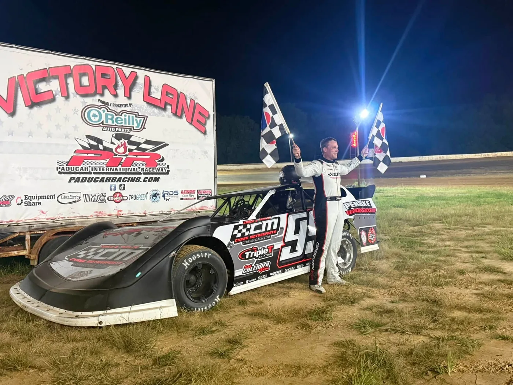
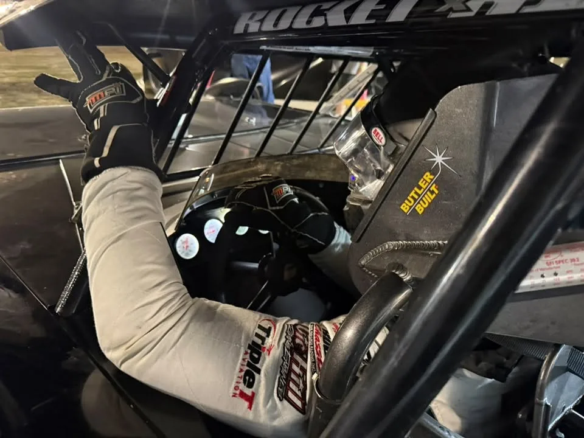
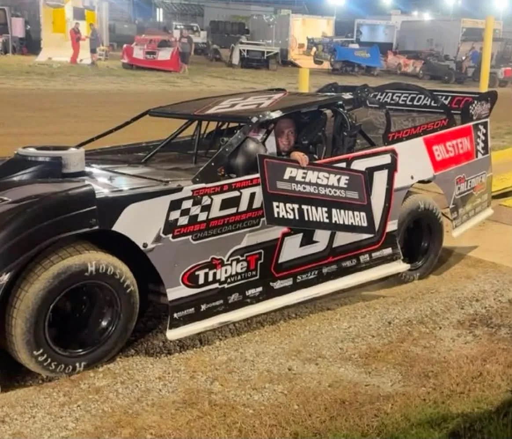
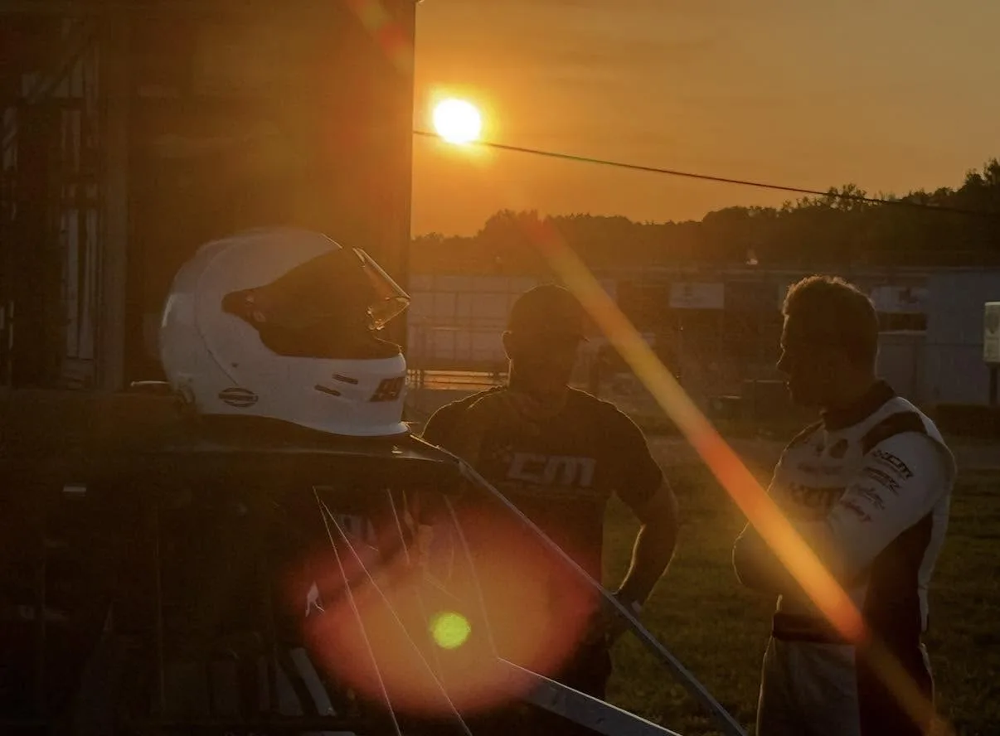
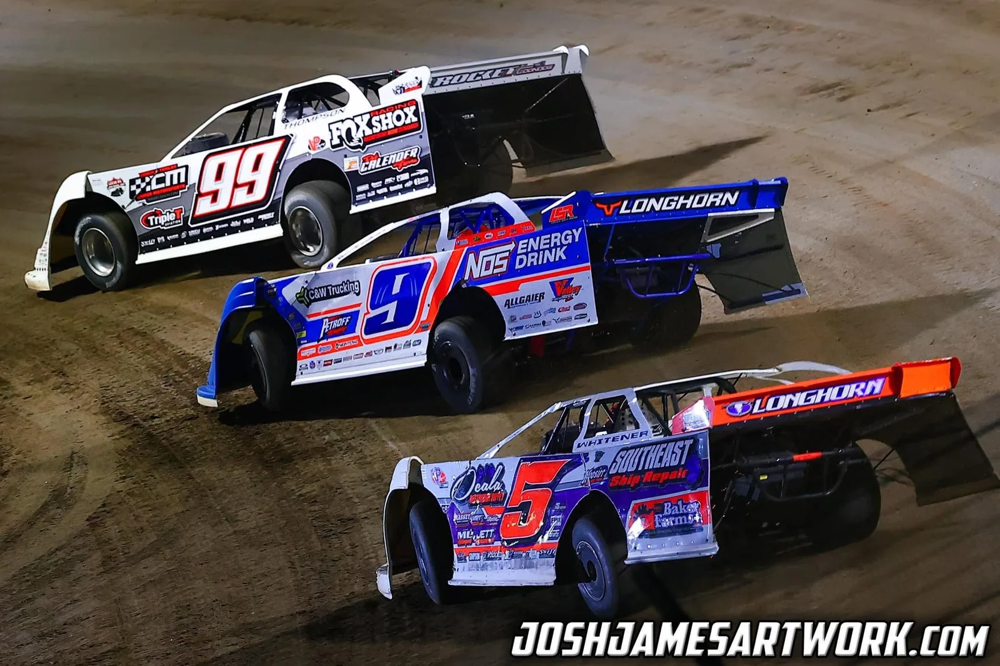
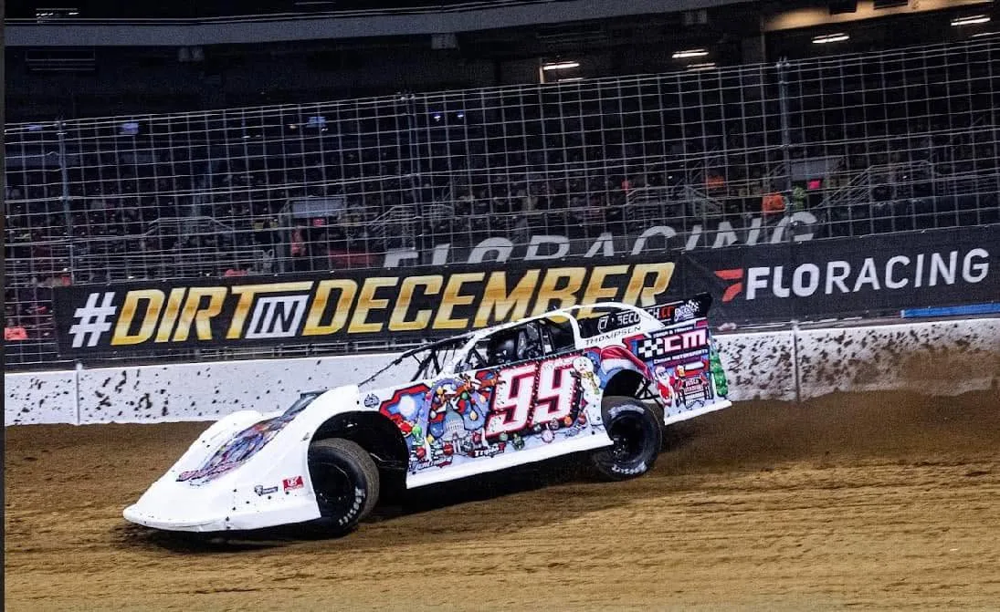
Different bodies, different nights, same number on the door.

The super late model, 2026.
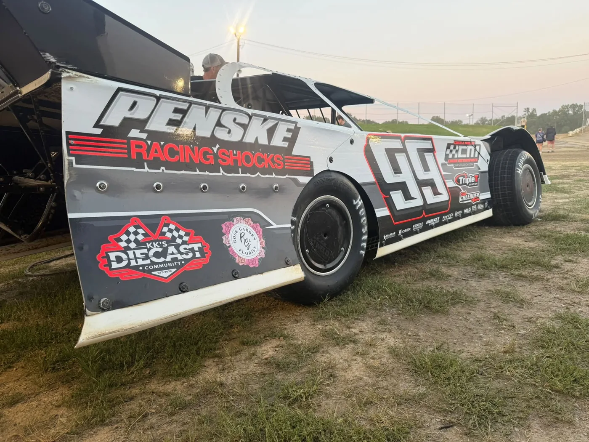
Sail panel as tall as the driver.
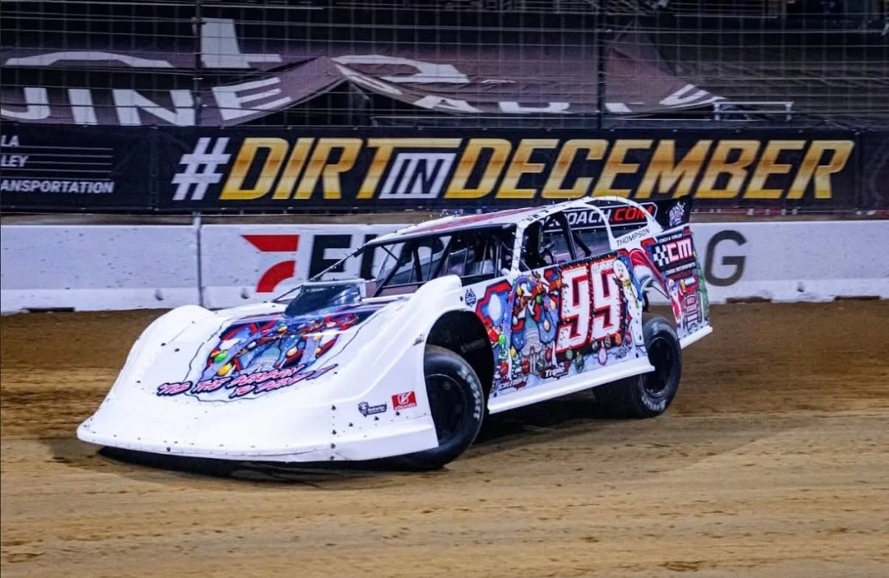
White, wrapped for Christmas.
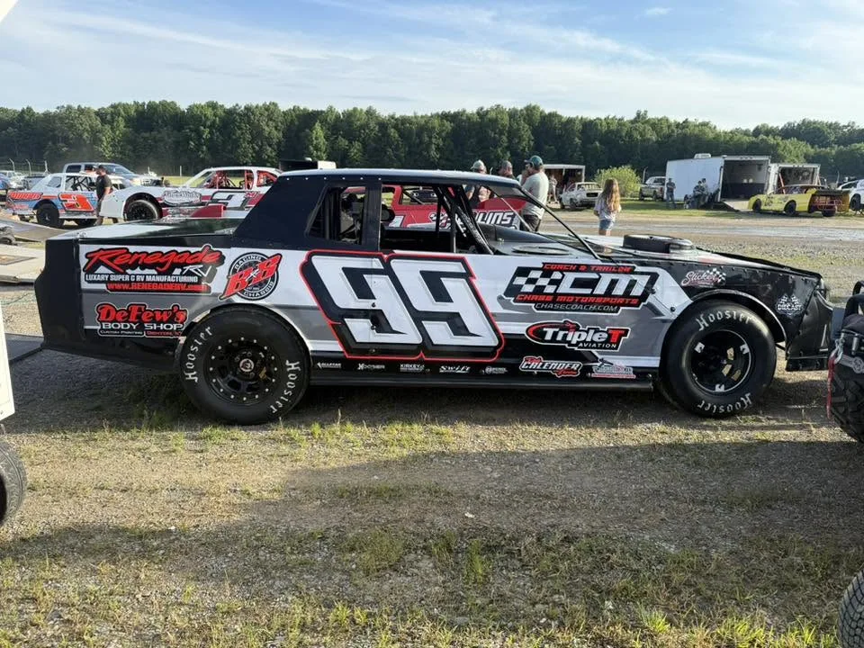
The other half of double duty.
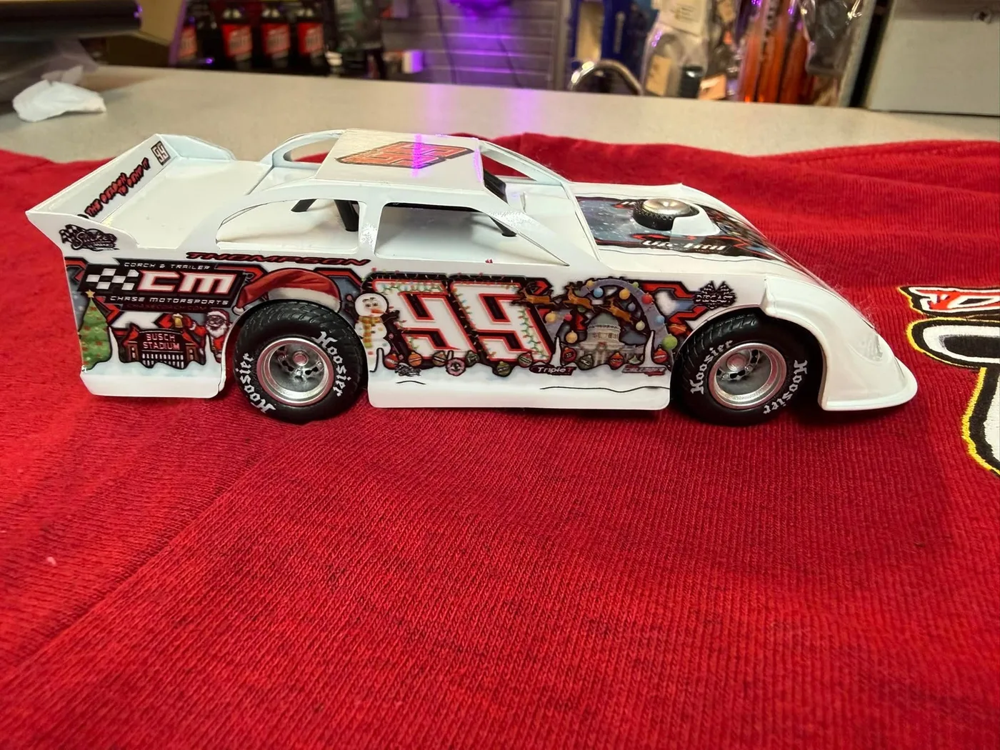
Small enough for the shelf.
Find it Saturday at Paducah International Raceway.
“Pilot, fast boats, dirt late model driver, & entrepreneur.”
That is how he describes himself. The day job is Chase Motorsports Coach & Trailer Sales in Paducah, whose checkered CM rides on the door of the car.
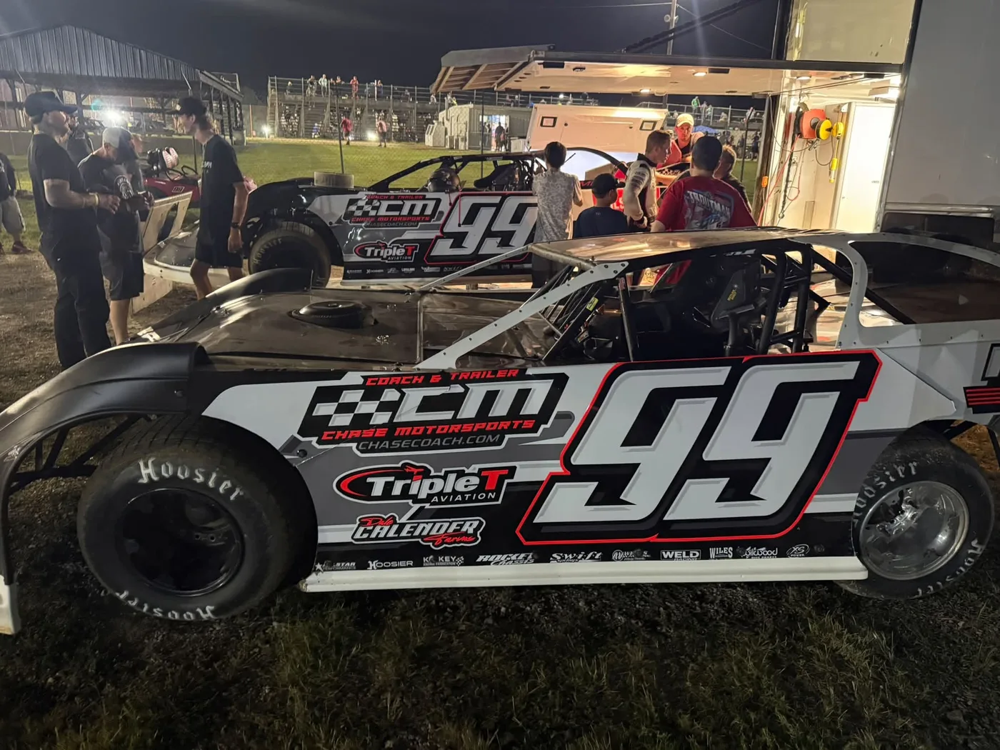
On the car: Chase Motorsports Coach & Trailer · Triple T Aviation · Penske Racing Shocks · Vic Hill Racing Engines · Rocket Chassis · Hoosier